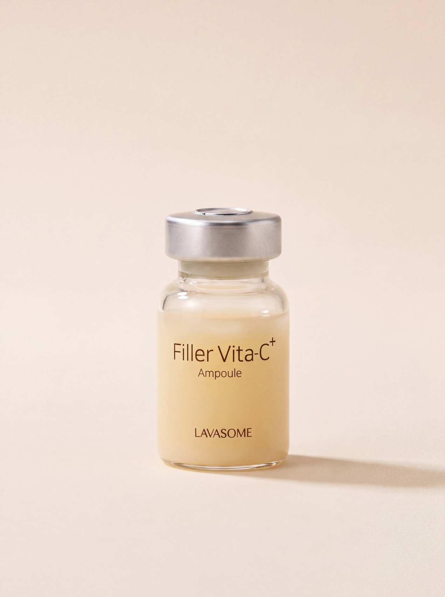

Jeju-Origin Research
Nature,
Proven by Science
자연은 가능성을 제공하고,
과학은 그 가능성이 작동할 조건을 설계합니다



Why Conditions
좋은 성분을 고르는 일에서
멈추지 않습니다
같은 성분도 조건이 다르면 다르게 작동합니다. 농도가 유지되는 조건, 피부가 견디는 조건, 성분끼리 서로를 방해하지 않는 조건 — 라바섬은 그 조건을 먼저 맞춥니다.
함량, pH, 안정화, 성분 간의 균형과 사용 환경까지 설계에 포함합니다. 성분표가 아니라 설계도에서 시작한다는 뜻입니다.
Founder’s Note
대표 인사말
좋은 원료를 찾는 일보다, 그 원료가 끝까지 제 역할을 하게 만드는 일이 훨씬 어려웠습니다.
제주에서 자란 것들을 오래 들여다봤습니다. 현무암층을 지나온 물, 건조와 자외선을 견디며 자란 식물. 이미 좋은 것들이었지만, 그대로 병에 담는다고 피부에서 같은 힘을 내지는 않았습니다. 농도를 올리면 자극이 따라왔고, 자극을 줄이면 효과가 흐려졌습니다.
그래서 순서를 바꿨습니다. 무엇을 넣을지 정하기 전에, 그것이 버틸 수 있는 조건을 먼저 설계하기로 했습니다. 라바섬의 모든 처방은 그 순서로 만들어집니다.
대표 성함Founder · LAVASOME
제주는 라바섬의 배경이 아니라,
포뮬러의 출발점입니다
제주에서 자란 원료가 실제 처방 안에서 작동하려면, 무엇을 확인해야 할까요?
검토한 제주 자생 원료Ingredients Screened
공동 연구 과제Joint Research
연구 협력 시작Since
“제주 원료를 쓰는 일과, 그 원료가 처방 안에서 끝까지 버티게 만드는 일은 다른 문제였습니다.”
연구 담당자 성함직함 · 소속 — 확인 후 기재
균형 위에 설계합니다
좋은 성분을 넣는 것과, 그 성분이 끝까지 작동하게 만드는 것 사이에는 무엇이 있을까요?
Active
필요한 기능을 위한 핵심 성분
Condition
성분이 안정적으로 작동하기 위한 pH와 환경
Balance
피부 부담과 기능 사이의 균형
피부에 가장 부드럽게
스며드는 제주
강함이 아니라 균형입니다. 고농도를 견디게 만드는 것은 농도가 아니라 조건입니다.
제주에서 발견해
포뮬러로 옮깁니다


Evidence
이 페이지의 근거
공동 연구 기관
원료 시험 항목
기능성 심사 완료 제품
공동 연구 기관의 공식 명칭과 연구 범위, 원료 시험 항목, 기능성화장품 심사·보고 필증 확인 결과를 이 자리에 기재합니다. 미백·주름개선 등 기능성 표시는 심사 근거가 확인된 제품에만 노출합니다.